Bayesian inference in non-Gaussian time series with global-local shrinkage process priors
Department of Statistics, Stockholm University
Collaborators
Robert Kohn, University of New South Wales, Sydney.
Ganna Fagerberg, Stockholm University
Yijie Niu, Stockholm University
Oskar Gustafsson, Stockholm University
Funding
- Swedish Research Council, grants 2020-02846 and 2025-01654.

Outline
- Time-varying parameters and state-space models
- Dynamic shrinkage process priors
- Time-varying multi-seasonal ARMA
- Non-Gaussian models
- Posterior inference
Time-varying parameter models
- Regression with time-varying parameters
\[ \begin{aligned} y_{t} &= \v x_{t}^{\top}\v\beta_{t}+\varepsilon_{t}\qquad \varepsilon_{t}\overset{\mathrm{iid}}{\sim}N(0,\sigma_{\varepsilon}^{2}) \\ \v\beta_{t} &= \v\beta_{t-1}+\boldsymbol{\nu}_{t}\hspace{2.1cm} \v\nu_{t}\overset{\mathrm{iid}}{\sim}N(\v 0,\v\Sigma_{\nu}) \end{aligned} \]
- Linear Gaussian state-space model \[ \begin{aligned} \text{Observation model:}\qquad\qquad\qquad \v y_{t} &= \v C_t\v\theta_{t}+\v\varepsilon_{t}\qquad &\v\varepsilon_{t}\overset{\mathrm{iid}}{\sim}N(\v 0,\v\Sigma_{\varepsilon, t}) \\ \text{Transition model:}\qquad\qquad\qquad\hspace{0.6cm} \v\theta_{t} &=\v A_t \v\theta_{t-1}+\boldsymbol{\nu}_{t}\hspace{2.1cm} &\v\nu_{t}\overset{\mathrm{iid}}{\sim}N(\v 0,\v\Sigma_{\nu, t}) \end{aligned} \] with state \(\v \theta_t=\v\beta_t\), \(\v C_t = \v x_t^\top\) and \(\v A_t = \v I_p\).
Regression with time-varying parameters
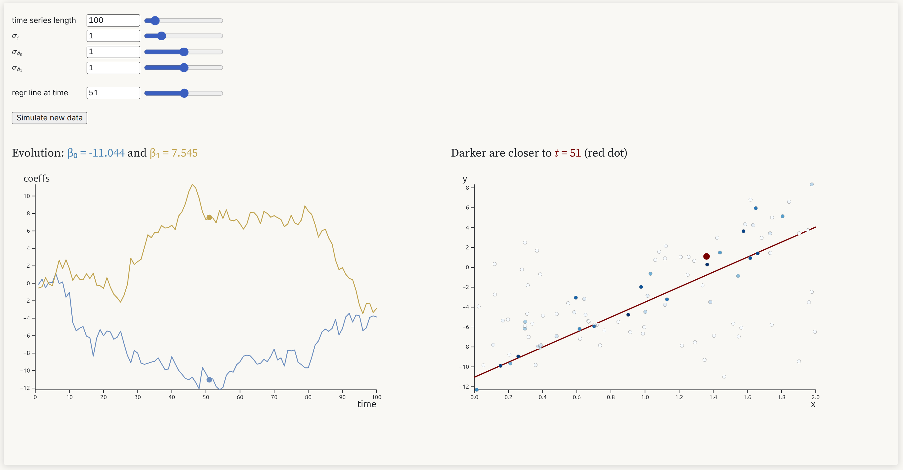
Taxonomy of state-space models
- Linear Gaussian
\[ \begin{aligned} \v y_{t} &= \v C_t\v\theta_{t}+\v\varepsilon_{t}\qquad &\v\varepsilon_{t}\overset{\mathrm{iid}}{\sim}N(\v 0,\v\Sigma_{\varepsilon,t}) \\ \v\theta_{t} &=\v A_t \v\theta_{t-1}+\boldsymbol{\nu}_{t}\qquad &\v\nu_{t}\overset{\mathrm{iid}}{\sim}N(\v 0,\v\Sigma_{\nu,t}) \end{aligned} \]
- Non-linear Gaussian (additive) models
\[ \begin{aligned} \v y_{t} &= \v c_t(\v\theta_{t}) + \v\varepsilon_{t}\qquad &\v\varepsilon_{t}\overset{\mathrm{iid}}{\sim}N(\v 0,\v\Sigma_{\varepsilon,t}) \\ \v\theta_{t} &=\v a_t(\v\theta_{t-1})+\boldsymbol{\nu}_{t}\qquad &\v\nu_{t}\overset{\mathrm{iid}}{\sim}N(\v 0,\v\Sigma_{\nu,t}) \end{aligned} \]
- Non-Gaussian - general distributions
\[ \begin{aligned} \v y_{t} &\sim p_t(\v y_{t} \vert \v\theta_t) \\ \v\theta_{t} &\sim q_t(\v\theta_{t} \vert \v\theta_{t-1}) \end{aligned} \]
Bayesian inference in state-space models
- Filtering posterior (instantaneous) \(p(\v\theta_{t}\vert y_{1:t})\)
- Smoothing posterior (retrospective) \(p(\v\theta_{t}\vert y_{1:T})\)
- Joint smoothing posterior \(p(\v\theta_{1:T}\vert y_{1:T})\)
Global-local shrinkage priors - regression [1, 2]
- Linear Gaussian regression with horseshoe prior \[ \begin{aligned} y_i &= \v x_i^\top\v\beta + \varepsilon_i,\quad \varepsilon_i \overset{\mathrm{iid}}{\sim}N(0,\sigma^2_\varepsilon) \\ \beta_j &\overset{\mathrm{ind}}{\sim} N(0,\blue{\tau^2}\red{\lambda^2_j}) \\ \tau &\sim C^+(0,1) \\ \lambda_j &\overset{\mathrm{iid}}{\sim} C^+(0,1) \end{aligned} \]
- Posterior mean (for orthogonal \(\v x\)) equals shrunken ML estimator \[ \tilde{\beta}_j = (1-\kappa_j)\hat\beta_j \]
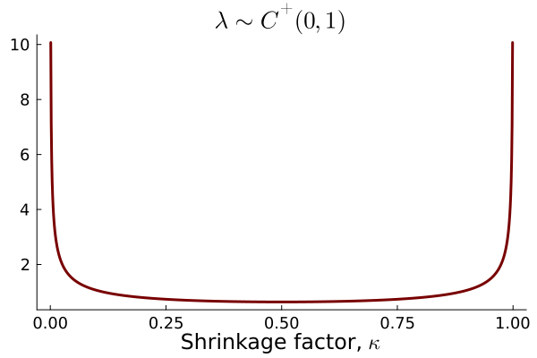
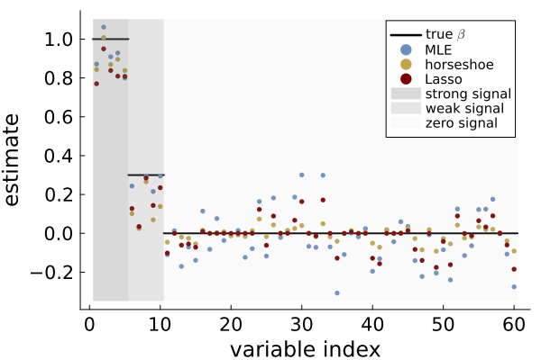
Dynamic global-local shrinkage priors for time series
- Local level model - dynamic shrinkage process (DSP) prior \[ \begin{aligned} y_t & = \mu_t + \varepsilon_t \hspace{4.3cm} \varepsilon_t \overset{\mathrm{iid}}{\sim} N(0,\sigma^2_\varepsilon) \\ \mu_t &= \mu_{t-1} + \nu_t, \hspace{3.0cm} \nu_t \overset{\mathrm{ind}}{\sim} N \big(0,\blue{\tau^2}\red{\exp(h_t)}\big) \\ h_t &= \rho h_{t-1} + \eta_t,\hspace{2.5cm} \eta_t \overset{\mathrm{iid}}{\sim}Z(\alpha,\beta,0,1) \\ \tau &\sim C^+(0,1) \end{aligned} \]
- Global variance \(\blue{\tau^2}\)
- Local variance \(\red{\lambda^2_t=\exp(h_t)}\)
- DSP becomes horseshoe when \(\rho=0\): \[ h_t \sim Z(\alpha,\beta,0,1) \Longleftrightarrow \lambda_t = \exp(h_t/2) \sim C^+(0,1) \]
Logistic-Beta distribution (Fisher’s \(Z\))
\(X\sim \mathrm{Beta}(\alpha,\beta)\) then \[Z := \log\Big(\frac{X}{1-X}\Big) \sim Z(\alpha,\beta,0,1)\]
Location-scale: \[\mu + \sigma Z \sim Z(\alpha,\beta,\mu,\sigma)\]
Heavy tails - log density decays linearly.
Mean-variance mixture of Gaussians [3] \[ \begin{aligned} Z \vert \xi &\sim N \big(\xi^{-1}(\alpha-\beta)/2,\xi^{-1}\big) \\ \xi &\sim \mathrm{PolyaGamma}(\alpha+\beta,1) \end{aligned} \]
Multi-seasonal ARMA with DSP prior [4]
Seasonal AR with DSP evolution \[ \phi_{p,t}(L)\Phi_{P,t}(L^{s})(y_{t}-\mu_t) = \varepsilon_{t},\quad\varepsilon_{t}\overset{\mathrm{iid}}{\sim}N(0,\sigma_{t}^{2}) \]
SAR(1,1) as a nonlinear Gaussian regression \[ y_t=\v z_t^{\top}\tilde{\v \phi}+\varepsilon_t \] \(\tilde{\boldsymbol{\phi}}=(\phi_1,\Phi_1,\red{-\phi_1\Phi_1})^{\top}\) and \(\boldsymbol{z}_{t}=(x_{t-1},x_{t-s},x_{t-(1+s)})^{\top}\)
Extensions
-
Multi-seasonal (daily, weekly, yearly cycle)
-
ARMA and Exact likelihood
-
Stochastic volatility with DSP priors
-
Multi-seasonal forecasting
-
Multi-seasonal VAR
-
Stability restrictions
Transformation to stability at every \(t\)
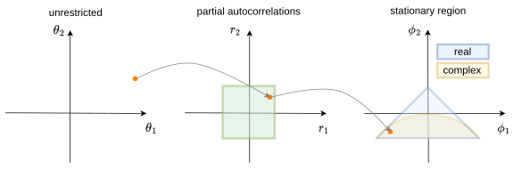
The AR parameters \(\v\phi\) are uniformly distributed over the stability region if, independently, \[\begin{equation}\label{eq:t_odd_even} \theta_k \sim \begin{cases} t\big(k+1,0,\frac{1}{\sqrt{k+1}}\big) & \text{ for } k \text{ is odd}\\ t_\mathrm{skew}\big(\frac{k}{2},\frac{k+2}{2}, 0, \frac{1}{\sqrt{k+1}}\big) & \text{ for } k \text{ is even} \end{cases} \end{equation}\]
- Transformation to partial autocorr matters
- Monahan \[r=\frac{\theta}{\sqrt{1+\theta^{2}}}\]
- Tanh \[r=\frac{e^{\theta}-e^{-\theta}}{e^{\theta}+e^{-\theta}}\]
- Hard-tanh \[ r=\begin{cases} -(1-\epsilon) & \text{if }\theta\leq-(1-\epsilon)\\[6pt] \theta & \text{if }-(1-\epsilon)<\theta<1-\epsilon\\[6pt] 1-\epsilon & \text{if }\geq1-\epsilon \end{cases} \]
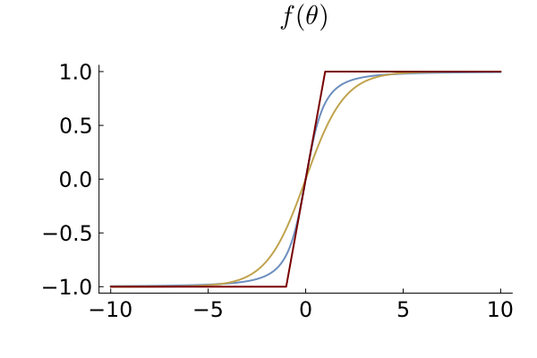
Seasonal AR with DSP prior - US industrial production 1919-2024
SAR(1,2) - Homoscedastic Gaussian
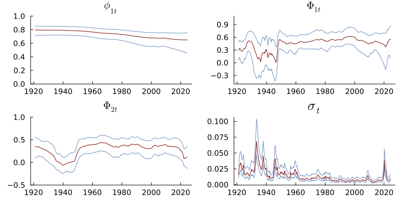
SAR(1,2) - DSP
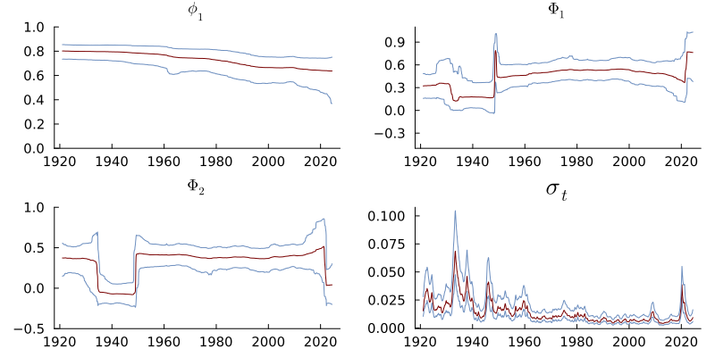
Time-varying generalized linear models with DSP evolution
- GLMs with time-varying parameters
\[ \begin{aligned} y_t \vert \v x_{t} &\sim \mathrm{ExpFamily}\Big(k^{-1}(\v x_{t}^\top\v\beta_{t}), \varphi_t \Big) \\ \v\beta_{t} &= \v\beta_{t-1}+\boldsymbol{\nu}_{t},\hspace{2cm} \v\nu_{t}\overset{\mathrm{iid}}{\sim}N\big(\v 0,\mathrm{Diag}(\exp(\v\tau^2 \odot \v h_t))\big) \\ \v h_t &= \Phi \v h_{t-1} + \v\eta_t,\hspace{1.6cm} \eta_{tk} \overset{\mathrm{iid}}{\sim}Z(\alpha,\beta,0,1) \end{aligned} \]
- Poisson regression with DSP prior
\[ \begin{aligned} y_t \vert \v x_{t} &\sim \mathrm{Pois}\big(\mu_t = \exp(\v x_{t}^\top\v\beta_{t}) \big) \end{aligned} \]
- Beta regression with DSP prior
\[ \begin{aligned} y_t \vert \v x_{t}, z_{t} &\sim \mathrm{Beta}\big(\red{\mu_t = \mathrm{logistic}(\v x_{t}^\top\v\beta_{t})}, \, \blue{\psi_t = \exp(\v z_{t}^\top\v\gamma_{t})} \big) \end{aligned} \]
Bayesian inference in state-space models with DSP prior
- Joint smoothing posterior (\(\v\psi\) holds all static parameters): \[p(\v\theta_{1:T}, \v h_{1:T}, \v\psi \vert y_{1:T})\]
- Gibbs sampling/MCMC
- Particle MCMC
- Hamiltonian Monte Carlo (HMC)
- Variational approximations
- Integrated Nested Laplace Approximation (INLA)?
Gibbs sampling in linear Gaussian model with DSP prior
- Square-and-log trick to turn variance \(\exp(h_t)\) into a mean \(h_t\). [8]
- Fast sampling of \(\v h_{1:T}\) using sparse multivariate Gaussian [9].
Gaussian approximation filters
Forward-filtering-backward sampling for linear Gaussian models [10, 11]
- Run Kalman filter \(p(\v\theta_t\vert y_{1:t})\) forward for \(t=1,2,\ldots,T\)
- Sample \(p(\v\theta_{t}\vert \v\theta_{t+1}, y_{1:T})\) backward for \(t=T,T-1,\ldots,1\)
Non-linear/non-Gaussian: Kalman filter and FFBS not applicable.
General idea: replace the filtering step with an approximate filter.
Prior propagation: approximate the joint distribution \[\left(\begin{array}{c} \v\theta_{t}\\ \v\theta_{t-1} \end{array}\right)\mid\boldsymbol{y}_{1:t-1}\overset{\mathrm{approx}}{\sim}N\left[\left(\begin{array}{c} \mathbb{E}(\v\theta_{t})\\ \mathbb{E}(\v\theta_{t-1}) \end{array}\right),\left(\begin{array}{cc} \mathbb{V}(\v\theta_{t}) & \mathbb{C}(\v\theta_{t},\v\theta_{t-1})\\ \mathbb{C}(\v\theta_{t},\v\theta_{t-1})^{\top} & \mathbb{V}(\v\theta_{t-1}) \end{array}\right)\right]\]
Observation update: approximate the joint distribution \[\left(\begin{array}{c} \boldsymbol{y}_{t}\\ \v\theta_{t} \end{array}\right)\mid\boldsymbol{y}_{1:t-1}\overset{\mathrm{approx}}{\sim}N\left[\left(\begin{array}{c} \mathbb{E}(\boldsymbol{y}_{t})\\ \mathbb{E}(\v\theta_{t}) \end{array}\right),\left(\begin{array}{cc} \mathbb{V}(\boldsymbol{y}_{t}) & \red{\mathbb{C}(\boldsymbol{y}_{t},\v\theta_{t})}\\ \mathbb{C}(\boldsymbol{y}_{t},\v\theta_{t})^{\top} & \mathbb{V}(\v\theta_{t}) \end{array}\right)\right]\]
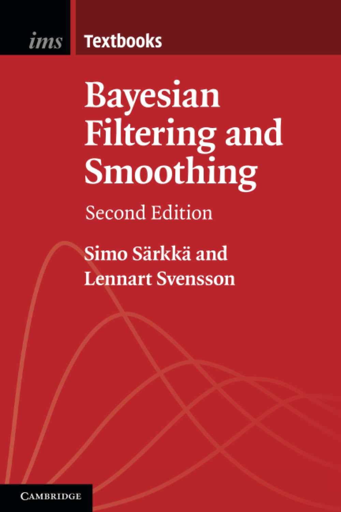
Gaussian approximation filters
- Extended Kalman filter
- Linearize measurement/transition models
- Apply standard Kalman filter
- Unscented Kalman filter
- Propagate sigma point approx of prior/posterior
- Prior linearization filter
- Linearize by statistical linear regression
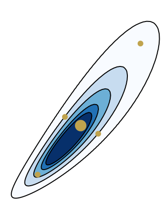
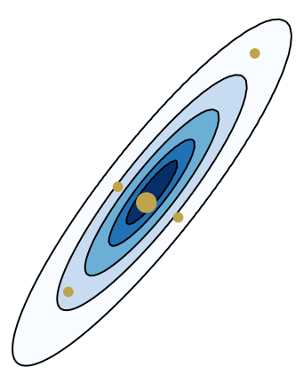
Simulated example SAR(2,2) - MCMC convergence

Iterated Gaussian approximation filters
Nonlinear Gaussian models
Non-Gaussian models
- Posterior linearization filter - conditional moments version [15]
- Statistical linearization using \(\mathbb{E}(Y \vert \v x)\) and \(\mathbb{V}(Y \vert \v x)\).
- Laplace filter [16, 17]
- Direct Gaussian approximation of filtering posterior at every \(t\) \[ \v{\theta}_{t} \vert y_{1:t} \overset{\mathrm{approx}}{\sim} N(\tilde{\v{\theta}}_{t \vert t}, \tilde{\v{\Omega}}_{t\vert t}) \] where \(\tilde{\v\theta}_{t\vert t}\) is posterior mode and \(\tilde{\v\Omega}_{t\vert t}\) is inverse of observed information.
- Automatic differentiation makes it automatic.
- Posterior linearization filter - conditional moments version [15]
Time-varying Beta regression for US layoff proportion
- Monthly US data from 1990:1-2026:4 on:
layoff- job losers on layoff as % of total unemployedvix- CBOE Volatility Index (“fear index”)
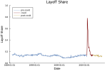
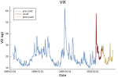
Data from the FRED database at https://fred.stlouisfed.org/
Beta regression for US layoff proportion - dsp prior
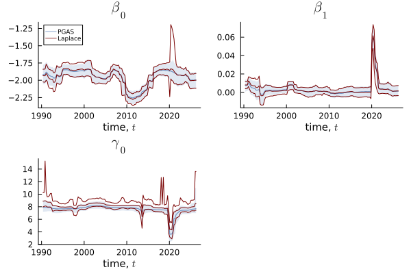
Linear approximations struggle with Beta regression
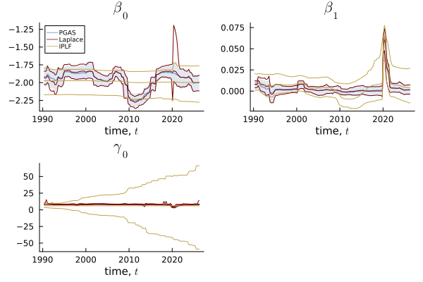
Beta regression for US layoff proportion - homoscedastic Gauss prior
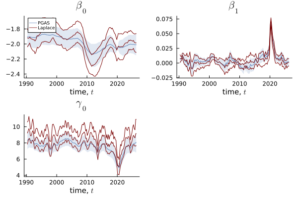
Beta regression for US layoff - fit at posterior median around pandemic
| DSP | Homoscedastic Gaussian |
|---|---|
|
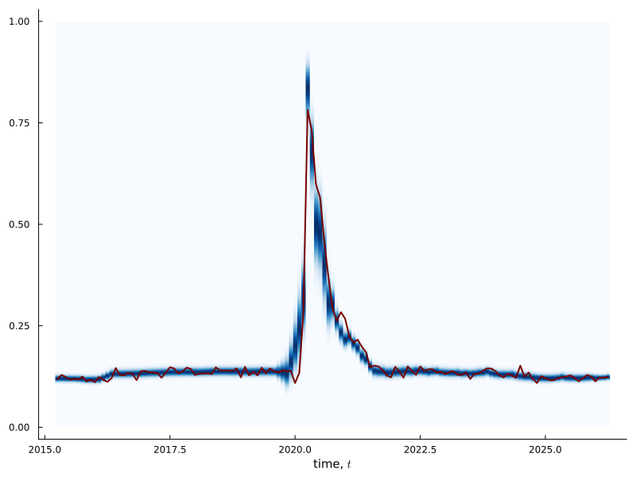 |
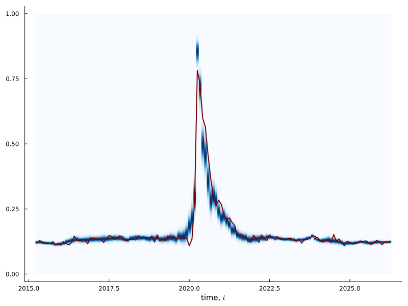 |
Grouping observations for speed and Gaussianity
Gaussian approximations at every time \(t\).
How Gaussian are the likelihood contributions \(p(y_t\vert\v\theta_t)\) in \(\v\theta_t\)?
No asymptotic Bernstein-von Mises effect to help.
A tight propagated prior \(\v\theta_t \sim N(\hat{\v\theta}_{t\vert t-1}, \Omega_{t \vert t-1} )\) helps a lot.
But DSP can give large innovations, so \(\Omega_{t \vert t-1}\) can be large.
- Group observations in \(G\) groups of \(J_g\) observations in group \(g\).
- Same state \(\v\theta_g\) for observations within a group.
\[ \begin{aligned} y_{gj} \vert \v x_{gj} &\sim \mathrm{ExpFamily}\Big(k^{-1}(\v x_{gj}^\top\v\beta_{g}), \varphi_{g} \Big) \\ \v\beta_{g} &= \v\beta_{g-1}+\boldsymbol{\nu}_{g},\hspace{2cm} \v\nu_{g}\overset{\mathrm{iid}}{\sim}N\big(\v 0,\mathrm{Diag}(\exp(\v\tau^2 \odot \v h_g))\big) \\ \v h_g &= \Phi \v h_{g-1} + \v\eta_g,\hspace{1.6cm} \eta_{g} \overset{\mathrm{iid}}{\sim}Z(\alpha,\beta,0,1) \end{aligned} \] where \(j=1,\ldots,J_g\) for \(g=1,\ldots,G\).
“When all the hope is gone, there is no reason for pessimism”.
Aki Kaurismäki
Grouping observations
- Related ideas:
- Two views:
- interpolation for algorithmic performance
- genuine model change: different time scales for observations and parameters.
Parameter evolution is automatically adapted to different group sizes.
Massive speed-up, particularly for sub-daily data.
Example: 30 min electricity price. Group \(48\times 30 = 1440\) observations by month.
Large groups: Sequential filtering of individual observations within group.
Natural parameter innovations
Parameter evolution should adapt to:
- Scales of covariates
- Link functions
- Model geometry
Parameter evolution with natural innovations \[ \begin{aligned} y_t \vert \v x_{t} &\sim \mathrm{ExpFamily}\Big(k^{-1}(\v x_{t}^\top\v\beta_{t}), \varphi_t \Big) \\ \v\beta_{t} &= \v\beta_{t-1}+\v S(\v\beta_{t-1}) \v\nu_{t},\hspace{2cm} \v\nu_{t}\overset{\mathrm{iid}}{\sim}N\big(\v 0,\mathrm{Diag}(\exp(\v\tau^2 \odot \v h_t))\big) \\ \v h_t &= \Phi \v h_{t-1} + \v\eta_t,\hspace{4.3cm} \eta_{tk} \overset{\mathrm{iid}}{\sim}Z(\alpha,\beta,0,1) \end{aligned} \] where \(\v S(\v\beta_{t-1}) = \bar{I}^{-1/2}(\v\beta_{t-1})\)
\(\bar{I}(\v\beta) = \frac{1}{T}I(\v\beta)\) is the Fisher information from an “average” observation.
Non-linear transition model. Prior propagation step: \(S(\v\beta_{t-1}) \approx S(\hat{\v\beta}_{t-1 \vert t-1})\).
Ongoing and Future work
- Multivariate extensions.
- Forecasting.
- More efficient sampling of dsp.
- Better prior elicitation for dsp.
- Metropolis-Hastings correction by blocking the state. Filtering version of [16].
- Delayed rejection:
- first try with cheap proposal (e.g. EKF)
- if rejected try more expensive proposal (e.g. Iterated EKF with line search)